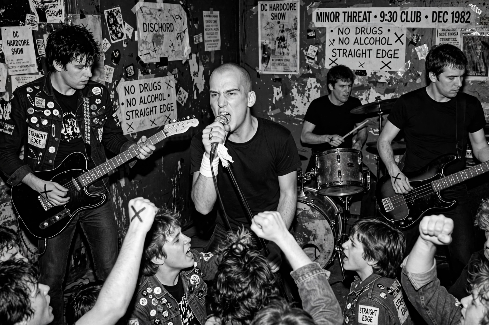

Minor Threat was an American hardcore punk band formed in Washington, D.C., in 1980 by vocalist Ian MacKaye and drummer Jeff Nelson. Active for only three years, the band helped define American hardcore and founded — unintentionally — the straight edge movement, named after their 45-second song "Straight Edge" rejecting drugs and alcohol.

| Origin | Washington, D.C., US |
|---|---|
| Years active | 1980–1983 |
| Genre | Hardcore punk |
| Label | Dischord |
| Members | Ian MacKaye, Jeff Nelson, Lyle Preslar, Brian Baker, Steve Hansgen |
MacKaye and Nelson had played in the Teen Idles and co-founded the independent label Dischord Records. With guitarist Lyle Preslar and bassist Brian Baker, Minor Threat released the EPs Minor Threat and In My Eyes (both 1981), the album Out of Step (1983) and the posthumous Salad Days EP (1985). Their breakneck, tightly played songs — most under two minutes — and DIY ethos became templates for hardcore nationwide.
The lyric "I've got the straight edge" inspired a subculture and later movements, though MacKaye resisted codifying it. Songs like "Guilty of Being White" and their cover of "Steppin' Stone" remained debated staples. The iconic cover of their first EP — a photo of MacKaye's younger brother Alec sitting shaven-headed on the Dischord House porch — is among punk's defining images. MacKaye went on to Fugazi; the band's complete discography remains in print on Dischord. See hardcore punk.